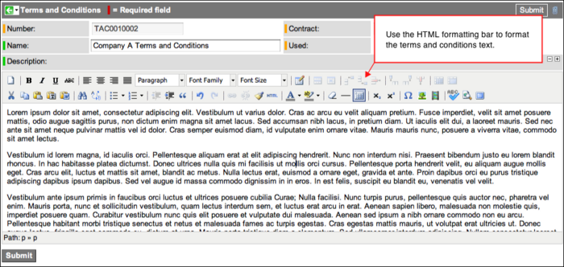
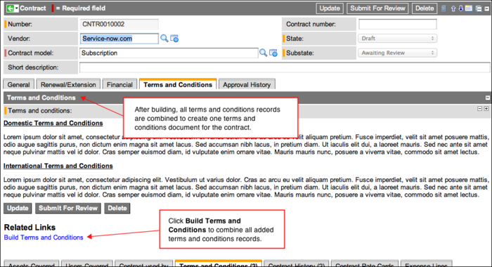
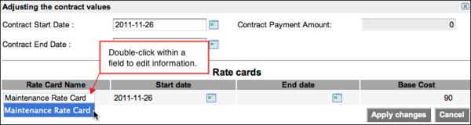

Using Contract Management
| |
Note: This article applies to Fuji and earlier releases. For more current information, see Contract Management at http://docs.servicenow.com
The ServiceNow Wiki is no longer being updated. Visit http://docs.servicenow.com for the latest product documentation. |
Contents
- 1 Overview
- 2 Contract Life Cycle
- 3 Creating Contracts
- 4 Obtaining Contract Approval
- 5 Sending Contract Notifications
- 6 Adjusting a Contract
- 7 Renewing a Contract
- 8 Extending a Contract
- 9 Canceling a Contract
- 10 Using Condition Check Definitions
1 Overview
Users with the contract_manager role can use the Contract Management application to create various types of contracts, such as leases, warranties, maintenance, and service. You can add additional information to contracts, such as:
- Assets covered by the contract
- Users covered by the contract
- Terms and conditions associated with the contract
- Other documents related to the contract
Track the various stages of a contract from draft to closure by viewing contract history and running reports. Adjust, extend, and renew active contracts.
2 Contract Life Cycle
From creation until closure, contracts follow a life cycle that determines which fields can be edited. When a contract is in Draft state, almost all fields on the contract record can be edited. After a contract moves past the Draft state, certain date, renewal, extension, and financial fields become read-only. The State field and Substate field are always read-only.
A scheduled job named Contract Compliance Checks runs on the Contract [ast_contract] table automatically each night. For more information about the scheduled job, see Using Condition Check Definitions. The scheduled job performs the following actions:
- Changes the contract state to Active if the contract is approved and reaches the specified start date.
- Renews the contract if the contract is approved for renewal and reaches the specified start date.
- Changes the contract state to Expired if the contract state is Active and reaches the end date.
Expense lines are only generated from contracts that are active or expired, starting with the Dublin release.
| State | Description |
|---|---|
| Draft | User adds information about the contract and specifies an approver. |
| Active | Contract was approved and has reached the specified Start date. |
| Expired | Contract reached the specified End date. Expired contracts with an active renewal workflow that are waiting for approval have a substate of Awaiting Review. Expired contracts with an active renewal workflow where the renewal was approved, but the renewal date has not yet passed, have a substate of Renewal Approved. Expired contracts with no active renewal or extension pending workflow have an empty substate. |
| Canceled | Contract was discontinued and is no longer active. |
In addition to a state, a contract can also have a substate.
| Substate | Description |
|---|---|
| Awaiting Review | Contract is being prepared for review. |
| Under Review | Contract is sent to the approver and the approver is reviewing the contract. |
| Approved | Contract is reviewed and accepted by the approver. |
| Rejected | Contract is reviewed and declined by the approver. |
| Renewal Approved | Contract renewal is approved by the approver. |
| Renewal Rejected | Contract renewal is rejected by the approver. |
| Extension Approved | Contract extension is approved by the approver. |
| Extension Rejected | Contract extension is rejected by the approver. |
| None | No substate is specified. |
3 Creating Contracts
Create a variety of contract models for leases, maintenance, or warranties. If a contract has one or more associated rate cards, the fields on the Contract form cannot be edited.
- Navigate to Contract Management and select the type of contract, such as Insurance, Maintenance, or Service, or select All.
- Click New.
- Fill in the fields, as appropriate. Not all fields appear on all contract type forms.
| Field | Description |
|---|---|
| Number | [Read-only] Internal number identifying the contract record. |
| Vendor | Vendor responsible for the contract. This field is mandatory when the contract model selected is NDA or Purchase Agreement, both of which are available starting with the Dublin release. |
| Contract model | [Required] Model to which the contract is assigned. For example Lease, Maintenance, Warranty, or Service Contract. |
| Commitment | Amount committed to spend with this vendor during this time period, from the start to the end of the contract. This field is available for purchase agreement contracts, starting with the Dublin release. |
| Discount | [Required] Discount the vendor has agreed to provide. This field is available for purchase agreement contracts, starting with the Dublin release. |
| Contract number | Number assigned to the contract by the vendor. |
| State | [Read-only] Current state of the contract: Draft, Active, Expired, or Canceled. |
| Substate | [Read-only] Current substate of the contract. For example, Awaiting Review, Under Review, Approved, or Rejected. |
| License quantity entitled | Number of licenses included in the contract. This field is available for Maintenance and Software License contracts. |
| Short description | Brief description of the contract. |
| Product | The software program. This field is available for License Bundle contracts with Software Asset Management Extensions. |
| Manufacturer | Company that created the software. This field is available for License Bundle contracts with Software Asset Management Extensions. |
| Install count | Number of computers on which the license is installed. This field is available for License Bundle contracts with Software Asset Management Extensions. |
| License count | Number of licenses purchased. This field is available for License Bundle contracts with Software Asset Management Extensions. |
| General Section | |
| Starts | Date on which the contract takes effect. This field is mandatory if the contract model is Purchase Agreement or NDA, both of which are available starting with the Dublin release. |
| Ends | Date on which the contract expires. Leave the end date blank to create an open-ended contract. This field is mandatory if the contract model is Purchase Agreement or NDA, both of which are available starting with the Dublin release. |
| PO Number | Purchase order number assigned to the contract. |
| Vendor account | Vendor account associated with the contract. |
| License type | Type of license: Enterprise, SaaS, or Subscription. This field is available for Maintenance and Software License contracts. |
| Application model | Application model associated with the contract. |
| Location | Location covered by the contract. |
| Contract administrator | Individual who works for the vendor and is responsible for managing the contract. |
| Approver | User who approves or rejects the contract. List is filtered to only show users with the itil role. |
| Description | Detailed description of the contract. |
| Renewal/Extension Section | |
| Automatically renew/extend | Indicates whether or not the contract can be renewed at the end of its term. |
| Options | Duration of the contract renewal or extension. For example, 1 year. |
| Renewal/Extension date | Date on which the contract renewal or extension takes effect. |
| Renewal/Extension end date | Date on which the contract renewal or extension ends. |
| Renewal/Extension contact | Individual who works for the vendor and is responsible for renewing the contract. |
| Cost adjustment type | Type of cost adjustment applied to the contract: Fixed, Manual, or CPI (consumer price index). |
| Cost adjustment amount | Numerical increase or decrease in price of contract. To indicate a decrease in price, enter a negative number. Either a Cost adjustment or Cost adjustment percentage can be specified, but not both. |
| Cost adjustment percentage | Percentage increase or decrease in price of contract. To indicate a decrease in price, enter a negative percentage. Either a Cost adjustment or Cost adjustment percentage can be specified, but not both. |
| Financial Section | |
| Cost center | Cost center financially responsible for the asset. |
| Tax exempt | Indicates whether or not the contract is exempt from tax. |
| Sales tax | Indicates whether or not sales tax is applied to the total cost. |
| Effective tax rate | Effective tax rate to apply to the total cost, if applicable. Effective tax rate is usually the average tax rate charged. |
| Has rate card | [Read-only] Check box to indicate whether the contract has an associated rate card. |
| Invoice payment terms | Terms that explain how to pay the contract. For example, Net Monthly Account or Net 30. |
| Payment schedule | Schedule that defines when to make payments. For example, Monthly or Annually. |
| Payment amount | Amount which has been paid on the contract to date. |
| Tax cost | [Read-only] Total cost of the tax. |
| Total cost | [Read-only] Final cost of the contract after adjustments have been applied. If a contract has one or more rate cards, this field shows the combined value of all rate cards. |
| Terms and Conditions Section | |
| Terms and conditions | [Read-only] Specific legal information in the contract. |
| Related Lists | |
| Assets Covered | Lists all assets covered by this contract. |
| Users Covered | Lists all users covered by this contract. |
| Contract used by | Lists all configuration items (CI) used in this contract. |
| Terms and Conditions | Lists all terms and conditions of this contract. |
| Expense Lines | Lists all expense lines in this contract. |
| Contract History | Displays the changes to the start and end dates of this contract and changes to the terms and conditions. |
| Service Offerings | Lists all service offerings from this vendor.
This related list is available when Service Portfolio Management is activated, starting with the Dublin release. |
| Service Commitments for Contracts | Lists all service commitments for this vendor's offerings.
This related list is available when Service Portfolio Management is activated, starting with the Dublin release. |
3.1 Use Case - Creating a Software Maintenance Contract
One common use case for the Contract Management application is creating a contract to track maintenance payments for enterprise software. The goal is to create a contract that shows the total amount of maintenance that must be paid for the software application, independent of different license purchases made over time. To use the steps below, you must have the Software Asset Management plugin activated.
- Create an application model, adding a Name and specifying Software License in Model categories.
- Create a software model, adding a Name and Model Number and selecting the application model created in step 1 in Application model.
- Follow the steps in Software Licenses to create a new software license, selecting the software model created in step 2 in Model and specifying an Asset Tag.
- Navigate to Contract Management > Contract > Maintenance.
- Click New.
- In License Type, select Enterprise.
- In Application Model select the application model created in step 1.
- Click Submit.
- In the Contracts list, select the contract just created.
- In the Asset Covered related list, click New.
- In Asset, select the software license created in step 3.
- Specify a Date added.
- Click Submit.
- In Payment schedule, select Annually.
- In Payment amount, enter a number.
- Fill in the other fields as appropriate.
- Click Update.
- Submit the contract for review.
3.2 Adding Assets to a Contract
Contracts can be associated with specific assets, including software licenses. Linking a contract with assets clarifies what the contract legally covers.
- Navigate to Contract Management > Contract > All.
- Select a contract.
- In the Assets Covered related list, click New.
- In Asset, select a specific asset covered by the contract.
- In Date added, select the date the asset was added to the contract. The date can be in the past, the present, or the future.
- [Optional] In Date removed, select the date the asset was, or will be, removed from the contract. Specifying a Date added and a Date removed is useful for reporting.
- Click Submit.
3.3 Adding Users to a Contract
A contract can cover specific users. For example, you may use a contract to hire a group of temporary workers.
- Navigate to Contract Management > Contract > All.
- Select a contract.
- In the Users Covered related list, click New.
- In User, select a specific user covered by the contract.
- In Date added, select the date the user was added to the contract. The date can be in the past, the present, or the future.
- [Optional] In Date removed, select the date the user was, or will be, removed from the contract. Specifying a Date added and a Date removed can be useful for reporting.
- Click Submit.
3.4 Adding Configuration Items to a Contract
Contracts can be associated with specific configuration items. Linking a contract with configuration items clarifies what the contract legally covers.
- Navigate to Contract Management > Contract > All.
- Select a contract.
- [Optional] In the Contract used by related list, click New to create a new configuration item.
- In the Contract used by related list, click Edit.
- In the Collection configuration items list on the left, double-click a configuration item name.
- The item is added to the Contract used by List on the right.
- Click Save.
3.5 Terms and Conditions
Adding terms and conditions to a contract helps keep all documentation relevant to a contract in one location (the contract record). The terms and conditions can be searched and used in reports. If multiple terms and conditions records are added to a single contract, set an order for the records so they appear in a specific sequence. The terms and conditions fields become read-only after a contract is sent for approval.
Users with the contract_manager role can read contract history and add terms and conditions.
There are three procedures involved in adding terms and conditions to a contract:
- Create a terms and conditions record.
- Add the record to a contract.
- Build a terms and conditions document for the contract.
3.5.1 Creating a Terms and Conditions Record
- Navigate to Contract Management > Contract > Terms and Conditions.
- Click New.
- Enter a Name.
- In Description, enter the text. Alternatively, copy and paste text from an existing file.
- [Optional] Format the text using the HTML formatting bar.
- Note: The Latin text that appears in the Terms and Conditions field in the base system is placeholder content commonly used to demonstrate formatting and does not represent actual input.
- 
- Click Submit.
{kind=link}
3.5.2 Adding Terms and Conditions to a Contract
After creating a terms and conditions record, add the record to a contract.
- Navigate to Contract Management > Contract > All.
- Select a contract.
- In the Terms and Conditions section, double-click Insert a new row.
- Click the reference lookup icon (
 ) and select a terms and conditions record from the list.
) and select a terms and conditions record from the list. - [Optional] Enter a number in Order to specify the sequence in which the record should appear in the terms and condition document.
| |
Note: If you attempt to enter a duplicate terms and conditions record for a contract and save the record, an error message appears and the new duplicate record is not added. |
3.5.3 Building a Terms and Condition Document Within a Contract
After adding one or more terms and conditions records to a contract, build a terms and conditions document within the contract. The terms and conditions records are added in the sequence specified in the Order field.
- Navigate to Contract Management > Contract > All.
- Select a contract.
- Ensure that one or more terms and conditions records have been added to the Terms and Conditions section.
- In Related Links, click Build Terms and Conditions.
- All records from the Terms and Conditions related list are added to the Terms and Conditions section of the contract record.
- 
{kind=link}
| |
Note: The Latin text that appears in the Terms and Conditions field in the base system is placeholder content commonly used to demonstrate formatting and does not represent actual input. |
3.6 Adding Documents To a Contract
Contracts can be associated with documents. Linking a contract with related documents helps keep all relevant information about a contract together and easily accessible.
Ensure that you have the Managed Documents plugin activated.
To add a document to a contract:
- Navigate to Contract Management > Contract > All.
- Select a contract.
- In the Documents related list, click Edit.
- All documents stored in the Managed Documents application appear in the Collection list. If the Collection list is long, create a filter of Type is Contract and click Run filter.
- In the Collection list, double-click a document.
- The item is added to the Documents List.
- Click Save.
4 Obtaining Contract Approval
After a contract is created and placed in Draft state, send the contract to a user with the contract_manager role for approval. Only one approver can be specified. After a contract is sent for review, the approver name cannot be changed (cancel the contract and create a new contract to specify a different approver). If a contract is rejected by the approver, the same approver or a different approver can be specified before the contract is sent for approval again.
To show approval history on contract records, navigate to Workflow > Administration > Properties and select the Yes check box for Log User approval activity - such as requested, approved and rejected - in the Approval History journal when using workflows to manage the approvals for a task.
4.1 Sending the Contract for Approval
- Navigate to Contract Management > Contract > All.
- Select a contract in Draft state.
- Select an Approver for the contract.
- Click Submit For Review.
- An email message is sent to the selected approver and the contract Substate changes to Under Review.
4.2 Approving or Rejecting a Contract
The user identified as the contract approver can approve or reject the contract.
- Navigate to Contract Management > My Approvals.
- Select a contract in Requested state.
- Do one of the following:
- Click Approve. If approved, the contract Substate changes to Approved.
- Click Reject and enter a rejection reason in the Comments field. If rejected, the contract Substate changes to Rejected.
Please note the following:
- A contract with a State of Draft and a Start Date set in the future is kept in State of Draft until the start date is reached. If the contract has a Substate of Approved, the system changes the State to Active and removes the Substate value.
- When a contract with a State of Draft and a Start Date set to a date in the past is approved, the contract State is automatically set to Active and Substate is left blank.
5 Sending Contract Notifications
Remind contract administrators about contract expiration dates by sending email notifications. The notifications can help the contract administrator renew or renegotiate a contract before it expires.
- Navigate to Contract Management > Contract > All.
- Select a contract.
- Check that the Contract administrator field contains the correct name. A single name can be specified.
{kind=link}
The contract.expiration event runs on the Contract [ast.contract] table automatically each night. An email message is sent to the person identified as the contract administrator at these times:
- 90 days ahead of the contract expiration date
- 60 days ahead of the contract expiration date
- 30 days ahead of the contract expiration date
- On the contract expiration date
A user with the admin role can edit the contract.expiration condition check. For more information about condition check definitions, see Using Condition Check Definitions.
For more information about notifications, see Email Notifications.
6 Adjusting a Contract
After creating a contract, you can adjust it, if necessary. For example, you might change the start date, end date, or payment amount for a contract. If a contract has a rate card, the rate card start date, end date, and base cost can also be adjusted. To adjust a contract, the State should be Active. If the end date of a contract rate card changes, the end date of any associated assets changes to match.
To adjust a contract:
- Navigate to Contract Management > Contract > All.
- Select a contract in Active state.
- Click Adjust.
- The example shows the Adjust Contract dialog box for a contract with a rate card.
- 
- Double-click in any field to edit information (see table).
- Click Apply changes to contract and rate cards.
{kind=link}
| Field | Description |
|---|---|
| Contract Start Date | Date on which the contract takes effect. |
| Contract End Date | Date on which the contract expires. |
| Contract Payment Amount | Total amount paid for the contract. If the contract has one or more rate cards, this field shows the total of all rate card base costs. |
| Rate Card Name | Name of the rate card. |
| Start date | Date on which the rate card values take effect. |
| End date | Date on which the rate card values expire. |
| Base Cost | Amount that must be paid before taxes. |
7 Renewing a Contract
After creating a contract, you can renew it, if necessary. Contract information and history is retained when a contract is renewed. If the end date of the contract changes, the end date of any associated assets changes to match. You can renew a contract that meets the following conditions:
- State is Active or Expired
- Substate is None or Rejected
To renew a contract:
- Navigate to Contract Management > Contract > All.
- Select a contract in Active or Expired state.
- Click Renew.
- Fill in the fields, as appropriate (see table).
- Do one of the following:
- Click Submit for Review to save all entered data and change the substate to Under Review. The contract is sent to the specified Approver.
- Click Save But Do Not Submit to save all entered data and change the substate to Awaiting Review. The Renew button is available to submit the renewed contract for review at a later time.
- Change any information on the Contract form, as necessary.
- Click Update.
- If you selected the Save But Do Not Submit option in step 5, ensure that you click Renew when you are ready to submit the contract renewal for approval.
{kind=link}
| Field | Description |
|---|---|
| Renewal Contact | Individual who works for the vendor and is responsible for renewing the contract. |
| Renewal Start Date | Date on which the renewed contract takes effect. |
| Renewal Option | Length of time for the renewal, in years. |
| Renewal End Date | Date on which the renewed contract expires. |
| Cost Adjustment Type | Type of cost adjustment applied to the renewed contract: None, Fixed, Manual, or CPI. |
| Approver | User who approves or rejects the contract. |
| Cost Adjustment | Numerical increase or decrease in price of the renewed contract. To indicate a decrease in price, enter a negative number. A Cost Adjustment or Cost Adjustment Percentage can be specified, but not both. |
| Cost Adjustment Percentage | Percentage increase or decrease in price of the renewed contract. To indicate a decrease in price, enter a negative percentage. A Cost Adjustment or Cost Adjustment Percentage can be specified, but not both. |
8 Extending a Contract
After creating a contract, you can extend it, if necessary. Extending the end date retains contract information and history. When you extend a contract, the end date of any associated assets changes to match the new contract end date. All other contract dates, including notification dates, are recalculated automatically based on the new end date. You can extend a contract that meets the following conditions:
- State must be Active or Expired
- Substate must be None or Rejected
To extend a contract:
- Navigate to Contract Management > Contract > All.
- Select a contract in Active or Expired state.
- Click Extend.
- Select an option from Extension Option or enter an Extension End Date.
- Fill in the remaining fields, as appropriate (see table).
- Do one of the following:
- Click Submit For Review to save all entered data and change the substate to Under Review so the contract can be sent to the specified Approver.
- Click Save But Do Not Submit to save all entered data and change the substate to Awaiting Review. The Extend button is available to submit the extended contract for review at a later time.
{kind=link}
| Field | Description |
|---|---|
| Extension Contact | Individual who works for the vendor and is responsible for extending the contract. |
| Extension Option | Length of time for the extension, in years. |
| Extension End Date | Date on which the extended contract expires. |
| Cost Adjustment Type | Type of cost adjustment to apply to the extended contract: None, Fixed, Manual, or CPI. |
| Approver | User with the contract_manager role who approves or rejects the contract extension. |
| Cost Adjustment | Numerical increase or decrease in price of the extended contract. To indicate a decrease in price, enter a negative number. A Cost Adjustment or Cost Adjustment Percentage can be specified, but not both. |
| Cost Adjustment Percentage | Percentage increase or decrease in price of the extended contract. To indicate a decrease in price, enter a negative percentage. A Cost Adjustment or Cost Adjustment Percentage can be specified, but not both. |
9 Canceling a Contract
A contract can be canceled when the State is Active. After a contract is canceled, the following takes place:
- Contract State changes to Canceled
- Condition checkers are changed to inactive
- Renew and Extend buttons become inactive
- Contract rate cards become inactive
To cancel a contract:
- Navigate to Contract Management > Contract > All.
- Select a contract.
- Click Cancel Contract.
- Click Yes to confirm contract cancellation.
{kind=link}
10 Using Condition Check Definitions
Condition check definitions enable an administrator to define logical conditions that indicate when to change a specific field value in a record. A scheduled job, called Contract Compliance Checks, evaluates these condition check definitions nightly by running the condition checker. Use this condition checker to check start dates and end dates and to set expiration levels for contracts. For example, a contract has a start date of March 1st. When the condition checker runs on March 1st, it verifies that the contract Substate is Approved and sets the contract State to Active based on the Start Date field.
The nightly condition checker sets the appropriate expiration level for active contracts based on the contract End Date. The expiration level can be viewed in the Contracts list. Knowing the expiration level can help contract managers renew or extend a contract before it expires.
10.1 Defining Condition Checks
- Navigate to Contract Management > System > Condition Check Definitions.
- Click New.
- Fill in the fields, as appropriate.
| Field | Description | ||
|---|---|---|---|
| Table | The table to which the condition applies. For example, Contract [ast.contract].
| ||
| Condition field | The field to be updated, usually Expiration level or State. | ||
| Event name | The name for the event to be fired when this condition changes the value of the field. Create a name using this syntax: <table_name>.<condition_field>. For example, contract.validation. | ||
| Order | The order in which the conditions are evaluated. | ||
| Category | The category for the condition check. Select Contract or None. The category is used for organizing information and reporting. |
10.2 Assigning Conditions to a Condition Check Definition
After saving a condition check definition, use the Conditions related list on the Condition Checks form to assign logical conditions that trigger an event. For example, the event could send an email notification. For more information about conditions, see Condition Builder.
- Navigate to Contract Management > System > Condition Check Definitions.
- Select a condition check to modify.
- In the Conditions related list, click New.
- Fill in the fields, as appropriate.
| Field | Description |
|---|---|
| Name | The value the field is set to, if the expiration conditions are met. |
| Condition check | The associated condition check. |
| Table | [Read Only] The table associated with the Condition check. |
| Event name | The name of the event this condition triggers. |
| Expiration Condition | The condition that must be true for the Condition check field to be set to this value (the Name). |
| Compliant state | System field. Do not use. |
| Order | The order in which the conditions are evaluated. The first condition that is found to match (where the Expiration Condition is true) is used and no others are checked. |